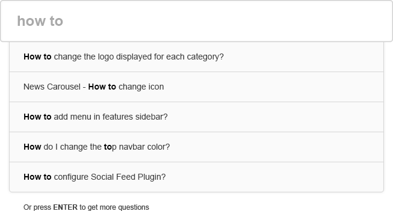
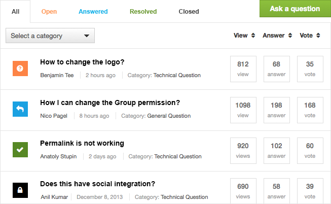
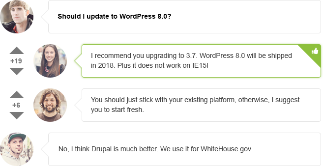
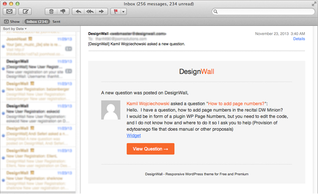

Explore & Discover
Amazing features. Amazing functions.
Mobile Ready
Instant Search
Ajax Filter
Users Engagement
Email Notification
One style fits all
Mobile Ready. Access from Everywhere.
Fully responsive. Interact on tablets and mobile devices.

Instant Search
We use Instant Search technique that shows search results instantly as you type. Search as you type.
Ajax Filter
Have your questions filtered faster and easier with Ajax loading. No page-reload needed.


Users Engagement
Drive community engagement for your Q&A site with options for comments, votes and pick out the best answers.
Email Notification
Either a new question posted or a new comment and answer, you can send email notification and get notified for those changes.

One Style fits All
A minimal style that fits well in any Wordpress theme and site.